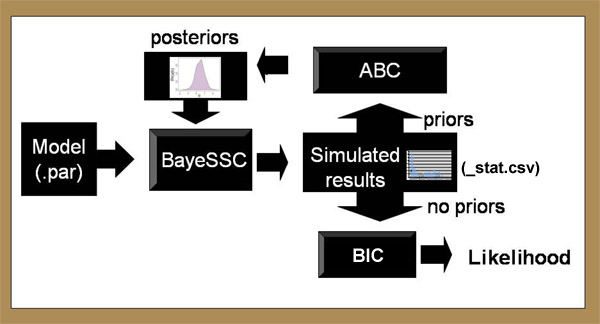

|
Visualize your modern and paleo data via Tempnet | ||||||||||||||||||||||||||||||||||||||||||||||||||
| |||||||||||||||||||||||||||||||||||||||||||||||||||
|
Version History Bayesian Serial SimCoal, (BayeSSC) is a modification of SIMCOAL 1.0, a program written by Laurent Excoffier, John Novembre, and Stefan Schneider. Their website presents the most thorough documentation available for this family of programs, and should be regarded as authoritative. The original version of the software on this site, Serial Simcoal, was first described in:
SIMCOAL 1.0 is a very flexible package that allows for almost any sampling regime and population history. Serial SimCoal allows samples to be taken from different points in time. Using ancient DNA, one could "scenario test", and get approximations of how likely one scenario was relative to another. BayeSSC Bayes SSC is powerful because it allows flexible coalescent modelling from a variety of different priors. The enables parameter estimation, likelihood calculations, and Bayesian inference. For example, SIMCOAL 1.0 could be used to simulate the effect of a historical event of modern samples, Serial SimCoal incorporates ancient samples from before the event, and BayeSSC derives the most likely date and severity of the event. Bayesian Coalescence The tutorial below explains the basics of coalescence theory. Users who are familiar with the coalescent process can skip ahead.
Typically, BayeSSC generates thousands of hypothetical trees using slightly different population parameters. The simulated genetics of these trees can then be compared to the actual genetics of the user's samples to investigate which history of these many simulated histories is the most likely to have generated the samples. There are many ways to do this. One particularly useful approach is Mark Beaumont's ABC method (Approximate Bayesian Computation described here). In this method, the average euclidean "distance" between the simulated genetic statistics and the observed genetic statistics is calculated for thousands of parameter combinations. This approximates the error associated with each simulation; parameters yielding low errors are more likely to represent the true population history than parameters with high errors. If errors are very high, the simulation is rejected entirely. These results can then be used to estimate the Bayesian posterior probability of different parameter combinations. The sections below give examples of how this works, and how to create input files specifying the range of histories under consideration. Schematic Representation The program flow of Serial SimCoal can be summarized in the following figure: Input Only one input file is needed to run the simulations. The format of the input file is almost identical to the "input file notation" section of the SimCoal 1.0 Help Manual. To help learn the input format, we'll walk through an example. Imagine you have 300-year-old samples from a population with high levels of genetic diversity. But when you take samples from the modern population, diversity is either low or quite different than the older samples. One reasonable hypothesis is this change in the genetic structure is due to a bottleneck in the population between now and 300 years ago. (We're assuming for simplicity here that 1 generation = 1 year). With that hypothesis, BayeSSC could be used to answer the following questions:
Here is an example of an input file that could be used to investigate this question. The fields are described in detail below. If you wish, you can download this file as a template, or for practice running the program.
What follows is an explanation of each type of parameter listed in the second column. As mentioned above, most of these parameters are identical to the parameters of SimCoal 1.0, and alternative explanations can be found in the Help Manual to that program.
Bayesian Prior Distributions At any point in the input file, rather than typing in an actual number, you can also specify a range of possible values to investigate. BayeSSC allows five different prior distributions:In the example file above there are two priors: a uniform distribution allowing the date of the bottleneck to vary uniformly from 1 to 299 generations in the past {U:1,299}; and an exponential distribution for the population size during the bottleneck {E:200}. This will investigate mostly bottleneck population sizes less than 200, but occasionally try one much larger. The program will also evaluate expressions, such as {4*6+2^3} (which equals 32)
and {4*(6+2^3)} (equalling 56). All items contained in curly brackets {} recieve
an id number, starting at 1 (not 0). To reference this number, use square brackets.
Thus, {6*[2]^3}, means "six times the second prior-distribution-or-equation cubed".
The equation interpreter understands the following symbols:
In the example file above, there are two expressions given. The growth rate is given as
{ln([4]/3000)/[2]}, meaning the modern population size of 3000 is the result of exponential
growth following a bottleneck when the population was
size (prior 4). This bottleneck occured (prior 2) generations in the past. The equation comes
from rearranging the exponential growth equation: For the mutation rate (and only for the mutation rate), it is possible to vary with time. If, for example, you wanted the mutation rate to begin at .05 and decrease to nothing going back in time, you could do this by specifying the mutation rate as {.05*.9^[T]}. The program understands [T] to be the time in generations before present. You can use any formula you wish. While this makes the program quite flexible, it also makes it run slower than if you specify a constant mutation rate or one based only on "once-per-simulation" priors. Output Most of the output from this program is the same as from SimCoal 1.0. If you tell the program to run B simulations you will get:
Within-StatGroup Statistics
Between-StatGroup Statistics
This file can be opened using Microsoft Excel, or any other spreadsheet, database or statistical program (it's in .csv format). You can download a sample file here. This was produced by running the example file above through 50 simulations. This is a very small number of runs for statistical purposes. As a general rule of thumb, you should run 10^(3+p) simulations, where p is the number of parameters you are approximating. Hypothesis testing (with no parameters) can be adequately done in 1000 runs, but several published studies have done 10,000,000 simulations or more. Modifications Aside from the changes necessary to make SimCoal 1.0 compatible with ancient genetic data, there were four other alterations made to the source code. Statistics Package As previously discussed, a statistics program was integrated into SimCoal itself so that relevent population statistics could be calculated on the fly, not in an ex post facto analysis in Arlequin or Paup. The statistics are output into a *_stat.csv file. For a description of the contents of this file, see the section on output. Multiple Coalescences The original version of SimCoal allowed only one coalescent event per generation. This assumption is a reasonably good approximation for situations where the population size (N) is much larger than the sample size (k). However there are situations where this assumption is not met, as demonstrated below. The probability of a coalescent event occuring in a population of size
N with k lineages is: After these two lineages have coalesced, there are (k-1)
lineages remaining, so the probability of one more coalescence is
simply:  Thus the probability of two coalescent events occuring at the same time
is [1]*[2], or  This equation can be greatly simplified by the following
approximation:  This approximation is better than it may at first appear (the error is <5% for k>5 and <1% for k>10). The implication of formula [4] is that there is a 100% chance that more than one lineage will coalesce in each generation where:  As a result, if condition [5] is ever met during a simulation, the program will surely produce a long-biased tree. Even if this condition is not met, the tree will still probably be biased longer than appropriate due to missing less frequent double or triple coalescences. This may translate into greater genotypic diversity than predicted. This was changed in Serial SimCoal to allow as many coalescences per
generation as was appropriate. After the first coalescence, the number of
extant lineages is adjusted (decremented by one), and the probability of
coalescence is recalculated. If a second coalescence occurs, again the
probabilities are adjusted. This process continues until either a
coalescence fails to occur (Unif(0,1)>Pr(coalescence)) or the tree
coalesces completely. Again, it should be noted that this bias has also
been adjusted in Excoffier's new version of the program, Hudsonian Process We chose to modify SimCoal 1.0 because of its unusually good tolerance of ambiguities: you can have any amount of migration, any size of populations, any number of samples, and all of these can change arbitrarily at any time thanks to historical events. However, in almost every simulation there comes a time when (1) all historical events have occured, (2) deme size has ceased to fluctuate and (3) no migration is occurring. When these three conditions are met, the waiting time to the next coalescent event can be calculated extremely rapidly using a random exponential variable. R.R. Hudson was among the first to exploit this convenient property. In Serial SimCoal, we use a Hudsonian process in such situations. This turns out to be a profitable modification, since these three conditions are often met near the root of the genealogy, when waiting times to the last few coalescent events very long. Thus, instead of waiting several thousand generations for one random number to be small enough for a coalescence, each coalescence time is generated from just one random number. This process, when implemented with example 1, sped the simulation up by a factor of 3. In simpler situations, gains would be even greater. Mersenne Twister The default pseudorandom number generator in C++ has certain, usually unimportant problems. One of them is that (on most operating systems) it produces a random number between 0 and 32,767. This means that if you run several million simulations with prior distributions, you will be trying the same 32,768 values multiple times, but not the values in between. BayeSSC uses the Mersenne Twister, which generates random numbers with a granularity of 2^63, is extremely fast, and only repeats every 43*10^6000 random numbers. Model Comparison How do I decide which model is "right"? Often, researchers are interested not just in the parameters of any one model, but want to compare many different scenarios of past history. For example, the example file above eg_bayes.par assumes that there was a bottleneck in the population at some point in the last 300 generations. We might want to know if this model is any more likely than a model which has no bottleneck, that is, if the population has been the same size since the most recent common ancestor (MRCA). One way to do this is to evaluate the likelihood of the two models. This requires a few steps of analysis to be performed on the output of BayeSSC. The method outlined below is only one of many possible (and published) methods for doing this analysis, and researchers are encouraged to try their own techniques. The code for this method is written for the R statstical package, which is free, open source, and quickly becoming the most important mathematical package in the scientific world. Approximate Bayesian Computation Once you have run your simulations, you want to know which combinations of prior values give results that match your data. For example, it may be the case that your genetic sequences came from a population whose size was 10,000, but that a population of size 20,000 might have produced the same genetic sequences as well; in fact it may have been even more likely to have produced them! What ABC tells you is the relative probability of getting your data at different prior values. This means that the "right answer", the right population size for example, is not a single number, but a probability distribution. This is called a posterior distribution. Consider the example file above. In this file we are trying to approximate two parameters: the date when the bottleneck happened, and the size of the population during the bottleneck (the modern growth rate and ratio of the bottleneck size to the ancient population size are not "free parameters", since they can be calculated once we know the other two). Let's say that we suspect a bottleneck, because the haplotype diversity in the modern is 0 (all samples have the same haplotype), but 300 generations ago it was 0.66. We are therefore trying to find the relative likelihood of bottlenecks of ~200 individuals at about 1-299 generations ago to produce this signiture. Here is an example of _stat.csv output you might get by running eg_bayes.par: ...and a bit later on in the file: When BayeSSC simulated the first history, it randomly chose a bottleneck population size of 264 ("Abstract 0") and bottleck time of 164 generations ago ("Event Tim"). The simulation run under those conditions produced a haplotype diversity of 0.54 in the modern group (Group 0), and a haplotype diversity of 0.46 in the old group (Group 1). Of course it is generally not the case that such a bottleneck produces higher diversity in the modern group, but the simulation shows that it is possible. This is why we need to run many, many simulations to get a sense of the relative probability of different parameter values to produce data "like" ours. One option for determining posterior distributions from this data is to use a rejection method. You will need to download the R statstical package. The first time you do this analysis in R you will also need to install the locfit, akima, and lattice packages (from the dropdown menu in R), and copy and paste this source code into R. Once you've done all that, then at the > prompt, type reject("[_stat.csv file name]") into R. You will be given a list of the columns in the file, and asked which ones you want to use in the analysis. In this case, we want the haplotype diversity in group 0 (column #6) and the haplotype diversity in group 1 (column #22). For this example, lets say our data had 0 diversity in group 0 and 0.66 in group 1. In the next step, the program calculates the "euclidean distance" from each simulation result to the observed data. The smaller this distance, the more closely the simulated values match the real data. The program then asks you for a delta value. Simulations that lie within delta units of the observed data are "accepted", while simulations that produced data further away are rejected. Researchers tend to use delta values that accept from 0.1% to 10% of the simulations. However, you also want many "acceptances" to draw valid inferences about your posterior (certainly 50 or more), which is why it is better to do large numbers of simulations. In the example at right, we see that almost 400 of the 5000 simulations were within 0.1 units of the "right" answer, so we should choose a value of 0.1 or lower. For this example, I somewhat arbitrarily chose 0.05. That value produces the following posterior distributions (there are 4 priors in the file, but we are only interested in Posterior 2: the date of the bottleneck, and Posterior 4: the population size during the bottleneck): The transparent bars represent the prior probabilities (uniform from 0 to 300, and exponential 200 respectively). The plum-colored distribution is the posterior. We have little confidence in the date of the event, though 250 generations b.p. is more likely than 50 generations b.p. We can have more confidence in claiming that the bottleneck population size was less than 200 individuals. Posteriors The reject() method in R will return the accepted simulation values, and the cumulitive density functions (cdfs) of the posterior distributions. Armed with this information, you can now rerun the simulations using the "best" (or "maximally credible") version of the model. There are two options at this point. The simple option is to replace each prior distribution with its maximum likelihood estimate (MLE), the peak of each posterior distribution, which is returned in the _post.pdf file. They can also be determined directly from the reject function using the mle() function (for example, reject(...)->eg; mle(eg) ). In the example above, we would replace the time of the first event in eg_bayes.par "{U:1,299}" with the MLE value "250". The other, more complicated option is to fit a standard statistical distribution to the posterior distribution, and replace the prior with this approximate posterior. Here I give an example of how to do this.To estimate the posterior distribution, save the results of the rejection method (reject("[_stat.csv file name]")->eg). Then analyze them using the approx.posterior() function (for example, approx.posterior(eg$accept.sims$Event.Time.0)). This will attempt to fit four families of probability distribution to your posterior, and return the -log likelihood value for each one (the lower the negative log likelihood, the better the fit). In the case of the bottleneck time, shown at left, we had so little information about the time that the uniform posterior from 12 to 299 was actually the best fit, scarcely different than the prior distribution: ~U(1,299). The population size at the time of the bottleneck also fits the same distribution family as its prior (an exponential distribution), but with an optimal rate parameter of 73 rather than 200. The gamma distribution fits slightly better, and would also be acceptable. In this case, you would replace the abstract parameter at the end of eg_bayes.par "{E:200}" with either "{E:73}" or "{G:.806,.011}". Whether to rerun your maximally credible model with the MLE or the approximate posterior depends on the purpose of your simulation. Generaly, it is more mathematically rigorous to use the posterior distribution at this step. Using the MLE presupposes that the scenario most likely to generate your data was in fact what happened; but part of the point of doing Bayesian inference is to have some idea of the error associated with that value. The error information is lost when you use just one number. On the other hand, one of the best ways to compare models is using the AIC value, which should only be done using MLEs. As a rule of thumb, if you are running the simulation to generate probability distributions of summary statistics it is best to use the approximate posterior; if you are comparing models, it is best to use MLEs. Calculating likelihoods As of yet, there is no single accepted "best" method to compare models. In the R-script, there are several different options available. In each of these methods, the output from the maximally credible models determined above are used to generate a second _stat.csv file. The statistics in this file are then compared to your observed data to determine how well the model fits observation. Two-tailed probability: This is perhaps the most intuitively obvious method, but is also problematic. It uses a frequentist paradigm,
which, though not invalid, is a confusing mixture of bayesian and frequentist approaches. Here, the probability
of a model is equal to two times the number of simulations whose value is equal-to-or-more-extreme-than the observed divided by the total
number of simulations. In the above example,
running 1000 simulations of eg_bayes.par with {E:73} as the "fitted" abstract parameter generated 302 scenarios where the nucleotide diversity
in group 0 matches the observed value of 0. Therefore, using this criterion the probability of the model
is pr=2*302/1000=.604, and the model "fails to be rejected". An alternative model where no bottleneck occurs (this can be simulated conveniently by using
{N:3000,0} as the abstract parameter) generated only 19 runs of 0 diversity, hence pr=.038 and the model is rejected. This can be loosely thought
of as "bootstrapping" the model, and as such is a non-parametric test. Relative support: This method was proposed by Mark Beaumont, and his R-implementation is included as the calmod() function. An alternative implementation is the shorter mod.comp() function, which may be more intuitive for those following the rubric above. Here, the number of "accepted" simulations from each model is compared in an ABC framework to determine their relative validity. In the example above, the two models have 302 and 19 "accepts" respectively, which provides 94.1% support for model 1, and 5.9% support for model 2. Note that this procedure is only valid if you run the same number of simulations of both models. Because models with more free parameters are better able to fit observed data, this method may be unfairly biased towards more complex models in some cases.
Akaike Information Criterion: This is the most recommended method, according to my own personal bias, because it corrects for the complexity
of the model. That is, models with hundreds of free parameters that almost always generate exactly the right answer are not necessarily "better" than
a simple model (with just a few parameters) that gets pretty close most of the time. The AIC formula is -2*LL + 2*p, where LL is the model's log-likelihood
and p is the number of free parameters in the model. Likelihood is here calculated as the product of the probability density function height at the observed
values relative to the maximum pdf height. All statistics are unit-normalized so that the large range of say segregating sites does not make this statistic
less important than small-ranged nucleotide diversity.
In the example above, the first model has two free parameters: the bottleneck time and size at the bottleneck. There are two
other priors in the file (the growth rate and the event size), but these are not FREE parameters, because they are completely determined (ie,
calcluated from) the other two. Running aic.ssc("eg_post1.csv", c(6,23), c(0,.66), params=2) on the output from the
maximally credible version of this model produces probability peaks at both observed values (left side of figure), and an AIC value of 4.27. By contrast,
the parameter-free model (a population of constant size Ne=3000; right side of figure below) is unlikely to have a 0 diversity in the first sample group,
though still likely to have
diversity of 0.66 in the second group. Though not as good a fit to the data, the fact that such a fit can be achieved with 0 parameters makes this model
a reasonable alternative, with an AIC of 5.65. Trace mode and log-files BayeSSC is written to provide the maximum flexibility to the user, making it possible to simulate tremendously complex demographic scenarios.
With this freedom comes the possibility for model misspecification to occur. As a fail-safe method, BayeSSC can be run from the command line with a -t flag,
which causes a ".log" file to be generated. This lists the population size and the number of active lineages in each deme at each point in time for each simulation. It is therefore advisable to run only a few simulations in this mode, or else extremely large .log files will result. To better visualize these results, the plot.log() routine was written in R, which sequentially displays population sizes and lineages for each simulation run in trace mode. In the example shown below, the user can confirm that (in this simulation, at least) his or her model did in fact have two populations, one constant and one that is recovering from a bottleneck (solid lines), and that the two populations were exchanging lineages (dashed lines) through migration at a fairly brisk rate relative to the time required for coalescence. In this simulation, coalescence was reached in just under 4000 generations. Ten lineages were added to both demes via ancient sampling at 500 generations before the present, though enough coalescence had already happened by that point that no population ever contained more than 16 lineages. Support and FAQs More questions and answers will be added to the list below as they come in. For now, if you have any problems with BayeSSC or Serial SimCoal, contact the programmer, Christian Anderson at Harvard University. Comments and suggestions for improvements or extentions are also more than welcome.
Downloads Bayesian Serial SimCoal
Updated: Windows executable and source code - April 18, 2011 Serial SimCoal
Bibliography
Funding for development of this program and website was received from NSF (grant DEB#0108541 to Liz Hadly and Joanna Mountain), as well as from the Stanford's Office of Technology and Licensing (OTL) via a Research Incentive Fund award to Joanna Mountain. |